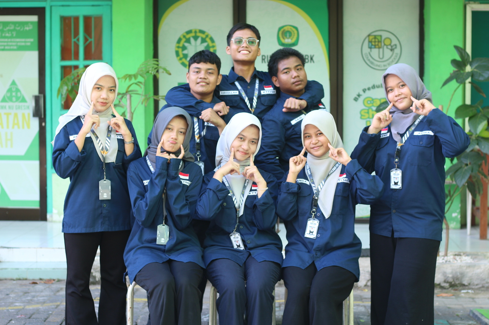
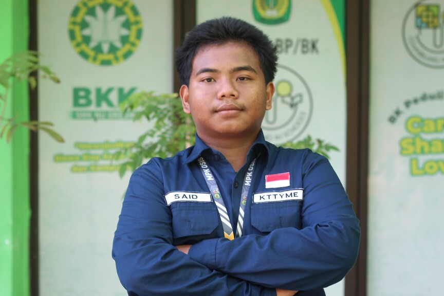
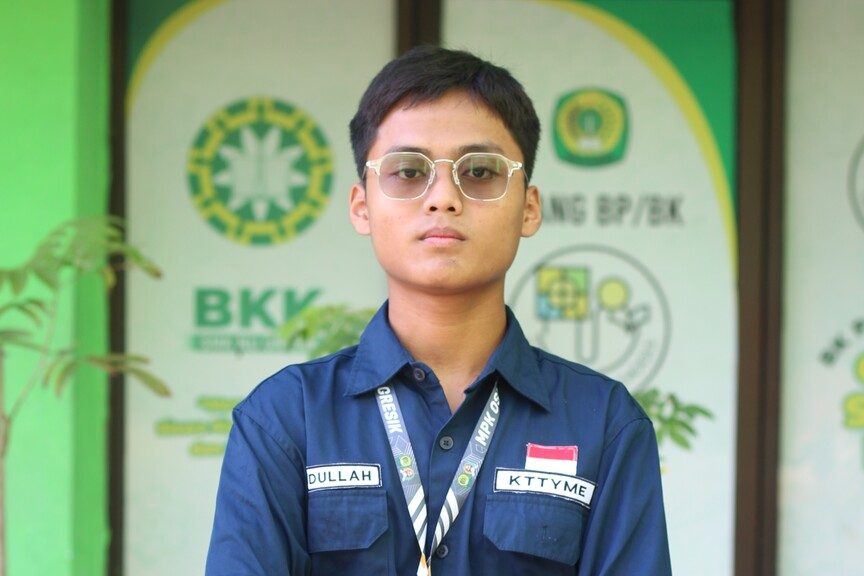
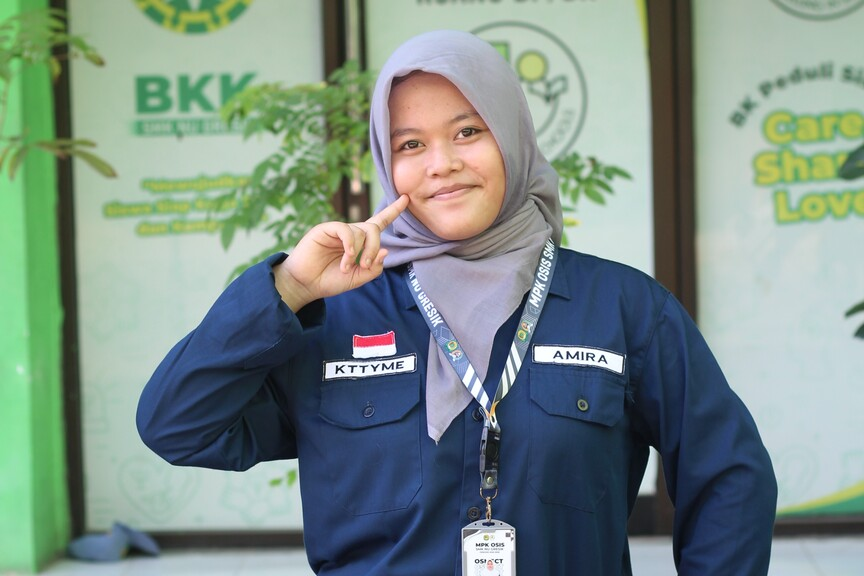
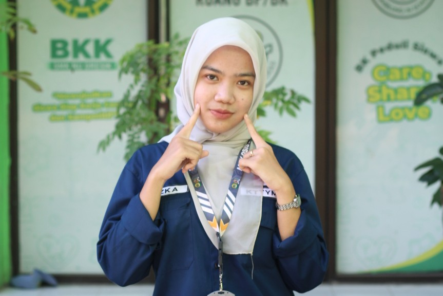
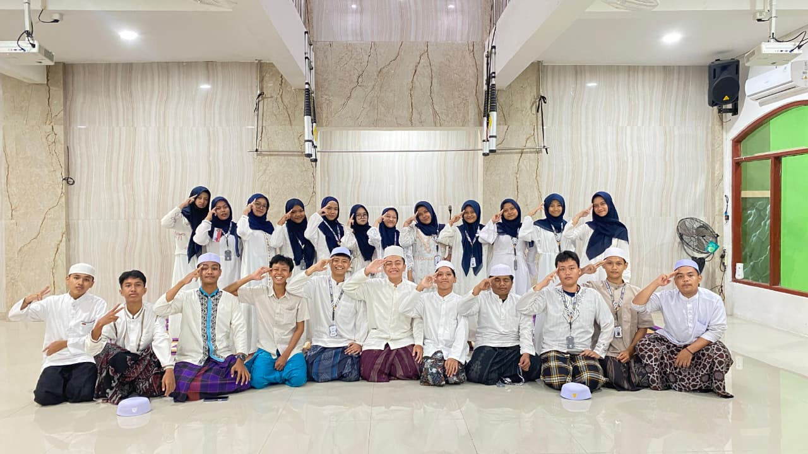
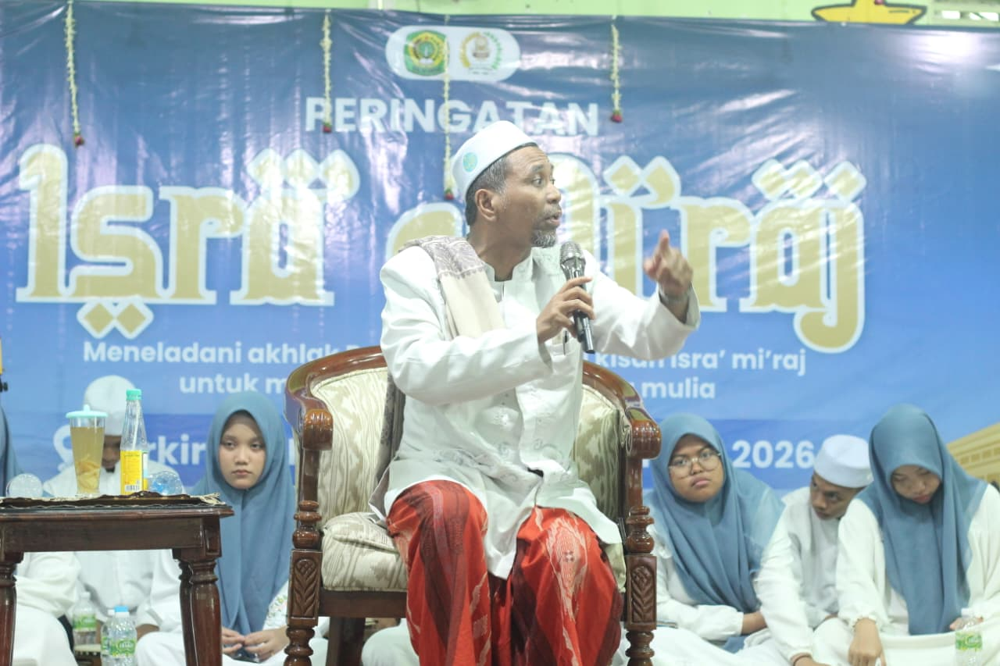
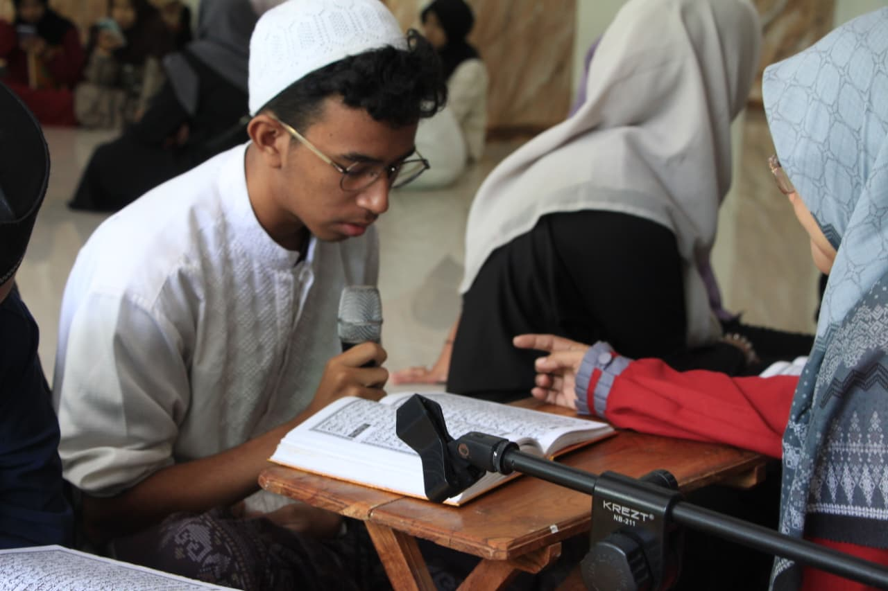
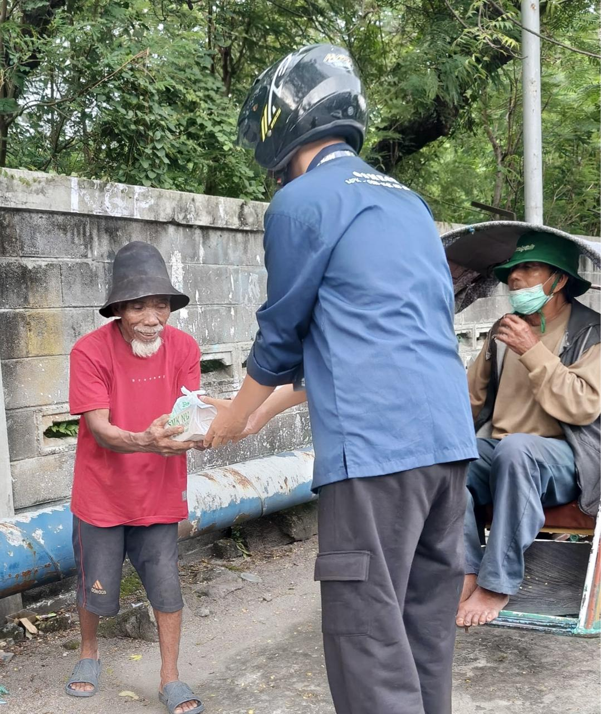
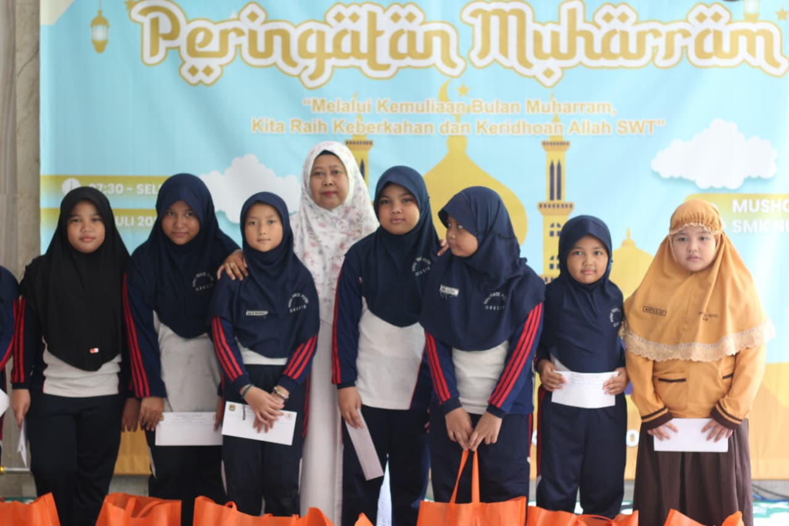

Ahmad Yasin Budiman, ST.
Pembina Sekbid KTTYME








KTTYME (Ketaqwaan Terhadap Tuhan Yang Maha Esa) adalah sekbid keagamaan sekaligus sekbid yang mengurusi segala acara keagamaan baik hari besar Islam, acara keagamaan rutinan, dan kegiatan berbagi di bulan ramadhan.

Manaqib Diba' adalah acara keagamaan rutinan yang dilaksanakan setiap 2 minggu sekali, dengan Minggu pertama diisi dengan manaqib dan Minggu ketiga diisi dengan diba'. Acara ini berlokasi di Musala lantai 2 SMK NU Gresik.

Isra' Mi'raj adalah kegiatan untuk memperingati perjalanan yang dilakukan oleh Rasulullah dalam waktu satu malam. Isra' Mi'raj di SMK NU GRESIK dilaksanakan dengan mendatangkan ustadz atau ustadzah untuk menyampaikan tausiyah kepada murid-murid dan pembacaan Sholawat Nabi.

Nuzulul Qur'an adalah kegiatan khataman Al-Qur'an, yang akan dibacakan oleh setiap kelas secara bergantian dari pagi hingga sore menjelang buka dan kegiatan ini dilaksanakan pada bulan suci Ramadhan di Musala lantai dua SMK NU Gresik.

Ramadhan Berbagi adalah kegiatan tahunan pada bulan Ramadhan, yang berupa bagi-bagi takjil ke beberapa lokasi, yakni depan taman makam pahlawan, WEP, dan alun-alun gresik, kegiatan Ramadhan Berbagi dilaksanakan setiap minggu di hari sabtu.

Idul Adha adalah kegiatan untuk memperingati peristiwa Qurban, yaitu ketika Nabi Ibrahim bersedia mengorbankan putranya Isma'il sebagai wujud kepatuhan terhadap Allah Swt. Kegiatan ini dilaksanakan pada akhir Juni di halaman dan parkiran sekolah dengan prosesi penyembelihan hewan Qurban, lalu dibagikan kepada warga sekolah dan warga sekitar di SMK NU Gresik.

Muharram adalah kegiatan untuk memperingati tahun baru hijriyah 1 Muharram dengan mengadakan kegiatan santunan anak yatim piatu di lingkup yayasan PPNUT Gresik serta dengan kegiatan dzikir bersama .

Maulid Nabi adalah kegiatan untuk memperingati kelahiran Nabi Muhammad SAW. Kegiatan ini dilaksanakan di SMK NU Gresik dengan menghadirkan ustadz atau ustadzah untuk menyampaikan tausiyah kepada murid-murid.